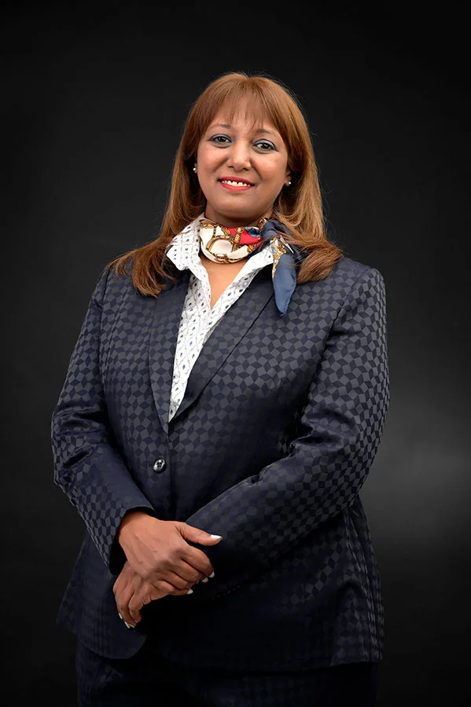

The Founder & The Chief Executive Officer

As the Founder and CEO of NeuroPi, and a trailblazer with over 30+ years of experience across technology,
neuroscience, child psychology, education, entrepreneurship and philanthropy, my journey has been guided by a deep
and enduring curiosity: How can we better understand human potential — and help each person truly thrive?
NeuroPi was born from that question. It brings together decades of learning, research, and real-world
application to build a platform that respects each individual’s uniqueness, while offering cutting-edge tools to help them
grow — intellectually, emotionally, and professionally.
My career has never followed a straight line — and that’s intentional. I’ve worked at the crossroads of
scientific discovery, technological innovation, and human development, always with a belief that no single discipline holds
all the answers. From leading data-driven research at the European Union’s Joint Research Centre, to developing
learning frameworks for children and adults, to building businesses that serve real human needs — every step has
been about bridging knowledge with compassion.
Technology & Data Science: 15+ years of leadership in tech innovation, particularly in AI, data
science, and building scalable platforms that serve people.
Neuroscience & Psychology: A deep understanding of how the brain learns and grows,
especially in childhood — and how we can nurture that growth in meaningful ways.
Education & Learning Design: Experience creating personalized cognitive learning strategies
that respect each learner’s pace, style, and strengths.
Entrepreneurship: A hands-on approach to building diverse ventures — from education and
early learning to design, film, and hospitality — always with a human-centered focus.
Along the way, I’ve been humbled to receive recognition from organizations that value both innovation and impact, including:
But more important than awards are the people we serve — the learners, parents, athletes, educators, and professionals who trust NeuroPi to support their journeys.
At its heart, NeuroPi is about giving people the insight and tools to grow — not by comparing themselves to others, but by understanding themselves more deeply. Our platform uses AI, genetics, and neuroscience to deliver precision-guided strategies tailored to each individual.
Whether you’re a parent supporting your child, a student working toward a dream, or a professional navigating change — our mission is to walk alongside you, helping you access the best in yourself.
This work isn’t just my career — it’s my calling.